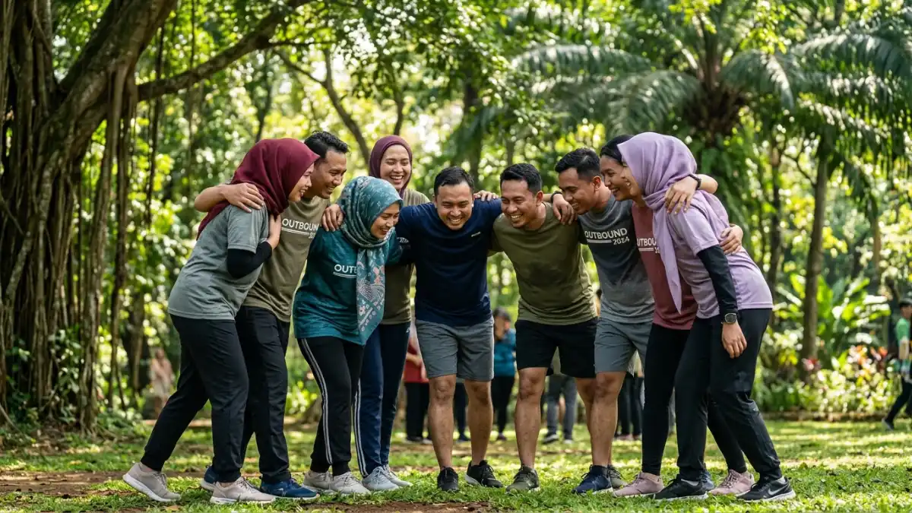

Games outbound adalah permainan kelompok di luar ruangan yang dirancang untuk membangun kerja sama, komunikasi, dan kekompakan tim. Games outbound umumnya digunakan perusahaan, sekolah, atau komunitas dalam kegiatan team building.
DAFTAR ISI
1. Apa Itu Games Outbound?
Games outbound adalah kumpulan permainan kelompok yang dilakukan di area terbuka untuk melatih kerja sama tim, komunikasi, dan pemecahan masalah secara bersama.
Konsep outbound sendiri berasal dari kegiatan pelatihan berbasis pengalaman (experiential learning) yang memanfaatkan aktivitas fisik dan permainan untuk membentuk perilaku kerja tim yang lebih solid.
Berbeda dengan pelatihan di dalam kelas, games outbound menempatkan peserta pada situasi nyata yang menuntut interaksi langsung, sehingga pelajaran yang didapat cenderung lebih membekas.
Games outbound biasanya diadakan di lapangan, area perbukitan, pantai, atau ruang terbuka lain yang cukup luas untuk aktivitas kelompok.
Durasi dan tingkat kesulitan permainan dapat disesuaikan, mulai dari sesi singkat satu jam hingga program outbound penuh selama satu hari.
2. Mengapa Games Outbound Penting untuk Team Building?
Games outbound penting karena mampu mempercepat proses saling mengenal antaranggota tim sekaligus melatih keterampilan kerja sama yang sulit dibangun hanya lewat rapat kantor.
Beberapa alasan utama games outbound sering dipilih untuk kegiatan team building antara lain:
- Membantu memecah sekat komunikasi antardivisi atau antarjabatan.
- Melatih kemampuan mendengarkan dan memberi instruksi yang jelas.
- Membangun rasa saling percaya melalui aktivitas yang membutuhkan dukungan rekan tim.
- Mengurangi tekanan kerja melalui suasana yang lebih santai dan menyenangkan.
- Memberikan pengalaman bersama yang dapat memperkuat ikatan emosional tim dalam jangka panjang.
Secara umum, perusahaan yang rutin mengadakan kegiatan team building, termasuk games outbound, cenderung melaporkan suasana kerja yang lebih cair dan komunikasi tim yang lebih terbuka, meskipun hasilnya dapat bervariasi tergantung pada desain program dan konsistensi pelaksanaannya.

Bermain secara kelompok membentuk lingkaran mengasah fokus dan kekompakan tim. (Ilustrasi)3. Apa Saja Contoh Games Outbound yang Populer?
Contoh games outbound yang populer meliputi permainan kerja sama fisik seperti tarik tambang, estafet air, dan human knot, serta permainan strategi seperti spider web dan trust fall.
Berikut sepuluh contoh games outbound yang sering digunakan dalam kegiatan team building:
- Tarik Tambang — permainan klasik yang melatih kekompakan dan semangat kelompok melalui adu kekuatan tim.
- Estafet Air — peserta memindahkan air dari satu wadah ke wadah lain secara berantai menggunakan alat sederhana, melatih koordinasi dan kecepatan kerja sama.
- Human Knot — peserta membentuk lingkaran, saling berpegangan tangan secara acak, lalu berusaha melepaskan simpul tanpa melepas pegangan, melatih komunikasi dan kesabaran.
- Trust Fall — satu peserta menjatuhkan diri ke belakang dan ditangkap oleh rekan tim, melatih rasa saling percaya.
- Spider Web — tim harus memindahkan seluruh anggota melewati jaring tali tanpa menyentuhnya, melatih strategi dan kerja sama.
- Blind Walk — satu peserta ditutup matanya dan dipandu rekan tim melewati rintangan, melatih komunikasi verbal yang jelas.
- Balok Ajaib (Stepping Stones) — tim melintasi area menggunakan alas terbatas yang harus dipindahkan secara bergantian.
- Egg Drop Challenge — tim merancang alat sederhana agar telur tidak pecah saat dijatuhkan, melatih kreativitas dan pemecahan masalah.
- Balloon Tower — tim menyusun menara dari balon dan alat sederhana dalam waktu terbatas, melatih perencanaan cepat.
- Flying Fox Sederhana — aktivitas meluncur menggunakan tali yang dipasang di antara dua titik, biasanya digunakan pada outbound dengan fasilitas lebih lengkap dan pengawasan instruktur bersertifikat.
4. Bagaimana Cara Memilih Games Outbound yang Tepat?
Cara memilih games outbound yang tepat adalah dengan menyesuaikan jumlah peserta, kondisi fisik, tujuan kegiatan, lokasi, dan waktu yang tersedia sebelum menentukan jenis permainan.
Beberapa faktor yang perlu dipertimbangkan:
- Jumlah peserta: permainan seperti human knot cocok untuk kelompok kecil, sedangkan tarik tambang lebih sesuai untuk kelompok besar.
- Kondisi fisik peserta: pilih permainan yang tidak terlalu berat jika mayoritas peserta jarang beraktivitas fisik.
- Tujuan kegiatan: jika fokus pada komunikasi, blind walk dan human knot lebih relevan; jika fokus pada strategi, spider web dan egg drop challenge lebih sesuai.
- Lokasi dan fasilitas: pastikan area cukup luas dan aman, terutama untuk permainan yang melibatkan alat seperti flying fox.
- Waktu yang tersedia: sesuaikan jumlah permainan dengan durasi acara agar tidak terburu-buru.
5. Apa Kesalahan Umum saat Menyelenggarakan Games Outbound?
Kesalahan umum saat menyelenggarakan games outbound adalah kurangnya briefing keselamatan, memilih permainan yang tidak sesuai kondisi peserta, dan minimnya pengawasan fasilitator berpengalaman.
Beberapa kesalahan yang sering terjadi:
- Tidak melakukan pemanasan sebelum aktivitas fisik yang cukup berat.
- Mengabaikan kondisi cuaca atau medan lokasi yang tidak mendukung.
- Tidak menyiapkan instruksi yang jelas sehingga peserta bingung di tengah permainan.
- Memaksakan permainan berisiko tanpa fasilitator atau instruktur berpengalaman.
- Tidak menyediakan opsi alternatif bagi peserta dengan keterbatasan fisik tertentu.
6. Tips Membuat Games Outbound Lebih Efektif
Games outbound akan lebih efektif jika dipadukan dengan sesi refleksi setelah permainan, sehingga peserta dapat mengaitkan pengalaman bermain dengan situasi kerja sehari-hari.
Beberapa tips tambahan:
- Buka acara dengan ice breaking ringan sebelum masuk ke permainan inti.
- Variasikan jenis permainan agar peserta tidak jenuh, mulai dari yang santai hingga menantang.
- Libatkan seluruh peserta, termasuk yang cenderung pasif, dengan memberi peran khusus.
- Berikan waktu diskusi singkat setelah setiap permainan untuk membahas pelajaran yang didapat.
- Sesuaikan tingkat kesulitan secara bertahap dari permainan ringan menuju yang lebih menantang.
7. Kesimpulan
Games outbound adalah cara efektif membangun kerja sama tim melalui pengalaman langsung, bukan sekadar teori.
Pilih permainan sesuai jumlah peserta, kondisi fisik, dan tujuan acara, lalu lengkapi dengan sesi refleksi agar manfaatnya terasa hingga ke lingkungan kerja sehari-hari.
Untuk memperdalam setiap tahapan kegiatan, pelajari juga ice breaking outbound untuk membuka acara, game kerja sama tim untuk outbound, dan ide game berkelompok untuk outbound.